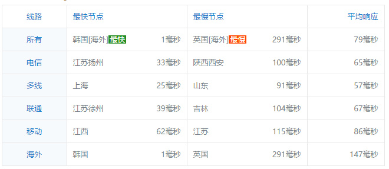
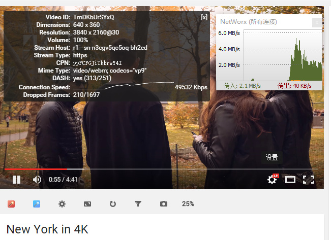
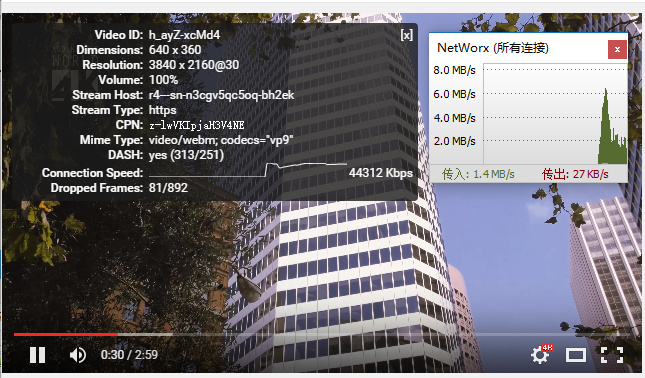

我们的服务器延迟低，速度快，而且全天任何时段都可以快速观看高清youtube。ping值也相对稳定，高峰期会稍微偏高。
这个是我们国家出口宽带不足导致的普遍现象，但是我们的线路比较优质，并没有受到太大影响。
下面为线路质量和速度的测试：
1、ping值（即服务器到本机的延迟 理论上值越少越好 ）

2.youtube在线观看速度测试（第一张图是广州电信100M测试结果 第二张图为联通100M测试结果）

